<!DOCTYPE html>
<html><head>
<title>PICSimLab Examples Board Arduino_Uno</title>
<meta charset='utf-8' />
<meta content='width=device-width,initial-scale=1' name='viewport' />
<link href='picsimlab.css' rel='stylesheet' type='text/css' />
<link href='style.css' rel='stylesheet' type='text/css' />
</head>
<body>
<nav class='TOC'>
<span class='chapterToc'><a href="examples_index.html">Examples Index</a></span>
<span class='chapterToc'><a href="board_Arduino_Mega.html">Arduino_Mega</a></span>
<span class='chapterToc'><a href="board_Arduino_Nano.html">Arduino_Nano</a></span>
<span class='chapterToc'><a href="board_Arduino_Uno.html">Arduino_Uno</a></span>
<span class='sectionToc'><a href="#board_Arduino_Uno_atmega328p">atmega328p</a></span>
<span class='subsectionToc'><a href="#board_Arduino_Uno_atmega328p_3Dcube">3Dcube</a></span>
<span class='subsectionToc'><a href="#board_Arduino_Uno_atmega328p_ADXL345_I2C">ADXL345_I2C</a></span>
<span class='subsectionToc'><a href="#board_Arduino_Uno_atmega328p_ADXL345_SPI">ADXL345_SPI</a></span>
<span class='subsectionToc'><a href="#board_Arduino_Uno_atmega328p_AnalogButtons">AnalogButtons</a></span>
<span class='subsectionToc'><a href="#board_Arduino_Uno_atmega328p_AnalogInOutSerial">AnalogInOutSerial</a></span>
<span class='subsectionToc'><a href="#board_Arduino_Uno_atmega328p_Arduino_sound">Arduino_sound</a></span>
<span class='subsectionToc'><a href="#board_Arduino_Uno_atmega328p_BMP180">BMP180</a></span>
<span class='subsectionToc'><a href="#board_Arduino_Uno_atmega328p_BMP280">BMP280</a></span>
<span class='subsectionToc'><a href="#board_Arduino_Uno_atmega328p_cardinfo">cardinfo</a></span>
<span class='subsectionToc'><a href="#board_Arduino_Uno_atmega328p_ColorPallete">ColorPallete</a></span>
<span class='subsectionToc'><a href="#board_Arduino_Uno_atmega328p_counter_dec">counter_dec</a></span>
<span class='subsectionToc'><a href="#board_Arduino_Uno_atmega328p_counter_latch">counter_latch</a></span>
<span class='subsectionToc'><a href="#board_Arduino_Uno_atmega328p_DHT11">DHT11</a></span>
<span class='subsectionToc'><a href="#board_Arduino_Uno_atmega328p_DHT22">DHT22</a></span>
<span class='subsectionToc'><a href="#board_Arduino_Uno_atmega328p_display_bargraph">display_bargraph</a></span>
<span class='subsectionToc'><a href="#board_Arduino_Uno_atmega328p_DS18B20">DS18B20</a></span>
<span class='subsectionToc'><a href="#board_Arduino_Uno_atmega328p_Encoder_basic">Encoder_basic</a></span>
<span class='subsectionToc'><a href="#board_Arduino_Uno_atmega328p_espmsim_server">espmsim_server</a></span>
<span class='subsectionToc'><a href="#board_Arduino_Uno_atmega328p_firmata">firmata</a></span>
<span class='subsectionToc'><a href="#board_Arduino_Uno_atmega328p_firmata_ethernet">firmata_ethernet</a></span>
<span class='subsectionToc'><a href="#board_Arduino_Uno_atmega328p_FreeRtos">FreeRtos</a></span>
<span class='subsectionToc'><a href="#board_Arduino_Uno_atmega328p_game_lcd">game_lcd</a></span>
<span class='subsectionToc'><a href="#board_Arduino_Uno_atmega328p_game_marduino">game_marduino</a></span>
<span class='subsectionToc'><a href="#board_Arduino_Uno_atmega328p_game_snake">game_snake</a></span>
<span class='subsectionToc'><a href="#board_Arduino_Uno_atmega328p_IO_expander">IO_expander</a></span>
<span class='subsectionToc'><a href="#board_Arduino_Uno_atmega328p_l293_motor">l293_motor</a></span>
<span class='subsectionToc'><a href="#board_Arduino_Uno_atmega328p_LCD_hd44780">LCD_hd44780</a></span>
<span class='subsectionToc'><a href="#board_Arduino_Uno_atmega328p_LCD_pcd8544">LCD_pcd8544</a></span>
<span class='subsectionToc'><a href="#board_Arduino_Uno_atmega328p_LCD_pcd8544_test">LCD_pcd8544_test</a></span>
<span class='subsectionToc'><a href="#board_Arduino_Uno_atmega328p_LCD_pcf8833">LCD_pcf8833</a></span>
<span class='subsectionToc'><a href="#board_Arduino_Uno_atmega328p_lcd_ssd1306">lcd_ssd1306</a></span>
<span class='subsectionToc'><a href="#board_Arduino_Uno_atmega328p_lcd_ssd1306_i2c">lcd_ssd1306_i2c</a></span>
<span class='subsectionToc'><a href="#board_Arduino_Uno_atmega328p_LED_matrix_MAX72xx">LED_matrix_MAX72xx</a></span>
<span class='subsectionToc'><a href="#board_Arduino_Uno_atmega328p_LED_matrix_scroll">LED_matrix_scroll</a></span>
<span class='subsectionToc'><a href="#board_Arduino_Uno_atmega328p_lode_runner">lode_runner</a></span>
<span class='subsectionToc'><a href="#board_Arduino_Uno_atmega328p_Oscilloscope">Oscilloscope</a></span>
<span class='subsectionToc'><a href="#board_Arduino_Uno_atmega328p_Piano">Piano</a></span>
<span class='subsectionToc'><a href="#board_Arduino_Uno_atmega328p_rc_receiver">rc_receiver</a></span>
<span class='subsectionToc'><a href="#board_Arduino_Uno_atmega328p_sdformatter">sdformatter</a></span>
<span class='subsectionToc'><a href="#board_Arduino_Uno_atmega328p_Serial_LCD">Serial_LCD</a></span>
<span class='subsectionToc'><a href="#board_Arduino_Uno_atmega328p_servo_Knob">servo_Knob</a></span>
<span class='subsectionToc'><a href="#board_Arduino_Uno_atmega328p_softserial">softserial</a></span>
<span class='subsectionToc'><a href="#board_Arduino_Uno_atmega328p_srtank_test">srtank_test</a></span>
<span class='subsectionToc'><a href="#board_Arduino_Uno_atmega328p_stepper_onerevolution">stepper_onerevolution</a></span>
<span class='subsectionToc'><a href="#board_Arduino_Uno_atmega328p_tictactoe">tictactoe</a></span>
<span class='subsectionToc'><a href="#board_Arduino_Uno_atmega328p_udpntpclient">udpntpclient</a></span>
<span class='subsectionToc'><a href="#board_Arduino_Uno_atmega328p_ultrasonic">ultrasonic</a></span>
<span class='subsectionToc'><a href="#board_Arduino_Uno_atmega328p_URTouch_ButtonTest">URTouch_ButtonTest</a></span>
<span class='subsectionToc'><a href="#board_Arduino_Uno_atmega328p_URTouch_QuickPaint">URTouch_QuickPaint</a></span>
<span class='subsectionToc'><a href="#board_Arduino_Uno_atmega328p_webclientrepeating">webclientrepeating</a></span>
<span class='subsectionToc'><a href="#board_Arduino_Uno_atmega328p_webserver">webserver</a></span>
<span class='subsectionToc'><a href="#board_Arduino_Uno_atmega328p_wires">wires</a></span>
<span class='chapterToc'><a href="board_Blue_Pill.html">Blue_Pill</a></span>
<span class='chapterToc'><a href="board_Breadboard.html">Breadboard</a></span>
<span class='chapterToc'><a href="board_ESP32_C3_DevKitC_02.html">ESP32_C3_DevKitC_02</a></span>
<span class='chapterToc'><a href="board_ESP32_DevKitC.html">ESP32_DevKitC</a></span>
<span class='chapterToc'><a href="board_Franzininho_DIY.html">Franzininho_DIY</a></span>
<span class='chapterToc'><a href="board_gpboard.html">gpboard</a></span>
<span class='chapterToc'><a href="board_K16F.html">K16F</a></span>
<span class='chapterToc'><a href="board_McLab1.html">McLab1</a></span>
<span class='chapterToc'><a href="board_McLab2.html">McLab2</a></span>
<span class='chapterToc'><a href="board_PICGenios.html">PICGenios</a></span>
<span class='chapterToc'><a href="board_PQDB.html">PQDB</a></span>
<span class='chapterToc'><a href="board_STM32_H103.html">STM32_H103</a></span>
<span class='chapterToc'><a href="board_uCboard.html">uCboard</a></span>
<span class='chapterToc'><a href="board_X.html">X</a></span>
</nav><main class='main-content'>
<a name="board_Arduino_Uno_atmega328p"></a>
<hr><table style="width:100%" border="0" bgcolor='#efefef'>
<tr><td colspan=2 width="100%"><a name="board_Arduino_Uno_atmega328p_3Dcube"></a><small>[<a href='#board_Arduino_Uno_atmega328p'>atmega328p</a>/3Dcube]</small>  <h1> MPU6050 and 3D cube </h1>
<br>
Time to rotate a virtual cube on a 0.96″ OLED Display! In this tutorial, I’ll be using the MPU6050 to get the acceleration values of the X-axis and the Y-Axis, which would then be translated to the speed at which the cube is rotating at. I’ll not be using the values of the gyroscope this time but I may used it in the future.

<br>
<br>
<a href="https://cyaninfinite.com/mpu6050-and-3d-cube/" target="_blank"> Tutorial MPU6050 and 3D cube</a><br><br></td></tr><tr><td width="80%" align=center><a target="blank_" href="board_Arduino_Uno/atmega328p/3Dcube/3Dcube.gif"></a></td>
<td width="20%" align=left ><a href="pzw/board_Arduino_Uno/atmega328p/3Dcube.pzw" target="_blank" >Download (pzw)</a>
</td></tr></table>
<hr><table style="width:100%" border="0" bgcolor='#efefef'>
<tr><td colspan=2 width="100%"><a name="board_Arduino_Uno_atmega328p_ADXL345_I2C"></a><small>[<a href='#board_Arduino_Uno_atmega328p'>atmega328p</a>/ADXL345_I2C]</small>  <h1>ADXL345 Accel example I2C</h1>
<pre>
/*  ********************************************* 
 *  SparkFun_ADXL345_Example
 *  Triple Axis Accelerometer Breakout - ADXL345 
 *  Hook Up Guide Example 
 *  
 *  Utilizing Sparkfun's ADXL345 Library
 *  Bildr ADXL345 source file modified to support 
 *  both I2C and SPI Communication
 *  
 *  E.Robert @ SparkFun Electronics
 *  *********************************************/
</pre>
<br>


<a href="https://github.com/sparkfun/SparkFun_ADXL345_Arduino_Library/blob/master/examples/SparkFun_ADXL345_Example/SparkFun_ADXL345_Example.ino" target="_blank">SparkFun_ADXL345_Example.ino</a><br><br></td></tr><tr><td width="80%" align=center><a target="blank_" href="board_Arduino_Uno/atmega328p/ADXL345_I2C/ADXL345_I2C.png">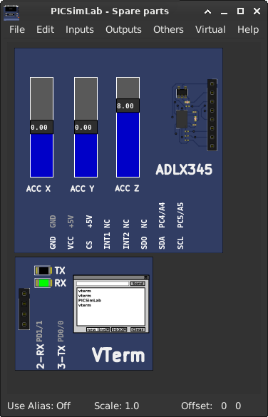</a></td>
<td width="20%" align=left ><a href="pzw/board_Arduino_Uno/atmega328p/ADXL345_I2C.pzw" target="_blank" >Download (pzw)</a>
<br><br><a href="../js/picsimlab.html?../picsimlab_examples/pzw/board_Arduino_Uno/atmega328p/ADXL345_I2C.pzw" target="_blank" >View Online</a><br><br>
</td></tr></table>
<hr><table style="width:100%" border="0" bgcolor='#efefef'>
<tr><td colspan=2 width="100%"><a name="board_Arduino_Uno_atmega328p_ADXL345_SPI"></a><small>[<a href='#board_Arduino_Uno_atmega328p'>atmega328p</a>/ADXL345_SPI]</small>  <h1>ADXL345 Accel example SPI</h1>
<pre>
/*  ********************************************* 
 *  SparkFun_ADXL345_Example
 *  Triple Axis Accelerometer Breakout - ADXL345 
 *  Hook Up Guide Example 
 *  
 *  Utilizing Sparkfun's ADXL345 Library
 *  Bildr ADXL345 source file modified to support 
 *  both I2C and SPI Communication
 *  
 *  E.Robert @ SparkFun Electronics
 *  *********************************************/
</pre>
<br>


<a href="https://github.com/sparkfun/SparkFun_ADXL345_Arduino_Library/blob/master/examples/SparkFun_ADXL345_Example/SparkFun_ADXL345_Example.ino" target="_blank">SparkFun_ADXL345_Example.ino</a><br><br></td></tr><tr><td width="80%" align=center><a target="blank_" href="board_Arduino_Uno/atmega328p/ADXL345_SPI/ADXL345_SPI.png">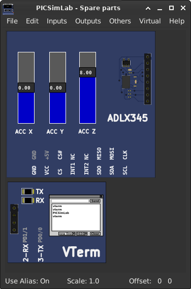</a></td>
<td width="20%" align=left ><a href="pzw/board_Arduino_Uno/atmega328p/ADXL345_SPI.pzw" target="_blank" >Download (pzw)</a>
<br><br><a href="../js/picsimlab.html?../picsimlab_examples/pzw/board_Arduino_Uno/atmega328p/ADXL345_SPI.pzw" target="_blank" >View Online</a><br><br>
</td></tr></table>
<hr><table style="width:100%" border="0" bgcolor='#efefef'>
<tr><td colspan=2 width="100%"><a name="board_Arduino_Uno_atmega328p_AnalogButtons"></a><small>[<a href='#board_Arduino_Uno_atmega328p'>atmega328p</a>/AnalogButtons]</small>  <h1>  Analog Buttons </h1>
<pre>
Arduino analog input push buttons.

</pre>


<a href="https://github.com/lcgamboa/picsimlab_examples/blob/master/docs/board_Arduino_Uno/atmega328p/AnalogButtons/src/AnalogButtons.ino" target="_blank">AnalogButtons.ino</a><br><br></td></tr><tr><td width="80%" align=center><a target="blank_" href="board_Arduino_Uno/atmega328p/AnalogButtons/AnalogButtons.png"></a></td>
<td width="20%" align=left ><a href="pzw/board_Arduino_Uno/atmega328p/AnalogButtons.pzw" target="_blank" >Download (pzw)</a>
</td></tr></table>
<hr><table style="width:100%" border="0" bgcolor='#efefef'>
<tr><td colspan=2 width="100%"><a name="board_Arduino_Uno_atmega328p_AnalogInOutSerial"></a><small>[<a href='#board_Arduino_Uno_atmega328p'>atmega328p</a>/AnalogInOutSerial]</small>  <h1>Analog input, analog output, serial output</h1>
<pre>
  Reads an analog input pin, maps the result to a range from 0 to 255 and uses
  the result to set the pulse width modulation (PWM) of an output pin.
  Also prints the results to the Serial Monitor.

  The circuit:
  - potentiometer connected to analog pin 0.
    Center pin of the potentiometer goes to the analog pin.
    side pins of the potentiometer go to +5V and ground
  - LED connected from digital pin 9 to ground

  created 29 Dec. 2008
  modified 9 Apr 2012
  by Tom Igoe

  This example code is in the public domain.

  http://www.arduino.cc/en/Tutorial/AnalogInOutSerial
</pre>


<a href="https://github.com/lcgamboa/picsimlab_examples/blob/master/docs/board_Arduino_Uno/atmega328p/AnalogInOutSerial/src/AnalogInOutSerial.ino" target="_blank">AnalogInOutSerial.ino</a><br><br></td></tr><tr><td width="80%" align=center><a target="blank_" href="board_Arduino_Uno/atmega328p/AnalogInOutSerial/AnalogInOutSerial.png"></a></td>
<td width="20%" align=left ><a href="pzw/board_Arduino_Uno/atmega328p/AnalogInOutSerial.pzw" target="_blank" >Download (pzw)</a>
<br><br><a href="../js/picsimlab.html?../picsimlab_examples/pzw/board_Arduino_Uno/atmega328p/AnalogInOutSerial.pzw" target="_blank" >View Online</a><br><br>
</td></tr></table>
<hr><table style="width:100%" border="0" bgcolor='#efefef'>
<tr><td colspan=2 width="100%"><a name="board_Arduino_Uno_atmega328p_Arduino_sound"></a><small>[<a href='#board_Arduino_Uno_atmega328p'>atmega328p</a>/Arduino_sound]</small>  <h1>  Arduino Star Wars Song for Piezo </h1>
<pre>
Nick James nicksort
<a href="https://gist.github.com/nicksort/4736535">https://gist.github.com/nicksort/4736535</a>
</pre>


<a href="https://github.com/lcgamboa/picsimlab_examples/blob/master/docs/board_Arduino_Uno/atmega328p/Arduino_sound/src/arduino_sound.ino" target="_blank">arduino_sound.ino</a><br><br></td></tr><tr><td width="80%" align=center><a target="blank_" href="board_Arduino_Uno/atmega328p/Arduino_sound/Arduino_sound.png"></a></td>
<td width="20%" align=left ><a href="pzw/board_Arduino_Uno/atmega328p/Arduino_sound.pzw" target="_blank" >Download (pzw)</a>
<br><br><a href="../js/picsimlab.html?../picsimlab_examples/pzw/board_Arduino_Uno/atmega328p/Arduino_sound.pzw" target="_blank" >View Online</a><br><br>
</td></tr></table>
<hr><table style="width:100%" border="0" bgcolor='#efefef'>
<tr><td colspan=2 width="100%"><a name="board_Arduino_Uno_atmega328p_BMP180"></a><small>[<a href='#board_Arduino_Uno_atmega328p'>atmega328p</a>/BMP180]</small>  <h1>  BMP180 Pressure sensor </h1>
<pre>
  This is an example for the BMP085 Barometric Pressure & Temp Sensor
  Designed specifically to work with the Adafruit BMP085 Breakout 
  ----> https://www.adafruit.com/products/391
  These pressure and temperature sensors use I2C to communicate, 2 pins
  are required to interface
  Adafruit invests time and resources providing this open source code, 
  please support Adafruit and open-source hardware by purchasing 
  products from Adafruit!
  Written by Limor Fried/Ladyada for Adafruit Industries.  
  BSD license, all text above must be included in any redistribution
</pre>
<br>


<a href="https://github.com/adafruit/Adafruit-BMP085-Library/blob/master/examples/BMP085test/BMP085test.ino" target="_blank">BMP085test.ino</a><br><br></td></tr><tr><td width="80%" align=center><a target="blank_" href="board_Arduino_Uno/atmega328p/BMP180/BMP180.png">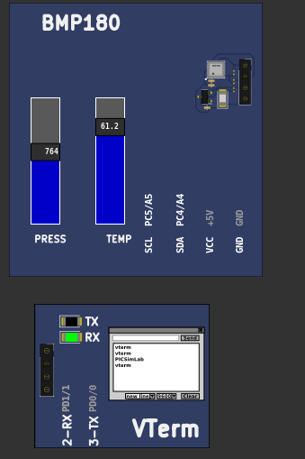</a></td>
<td width="20%" align=left ><a href="pzw/board_Arduino_Uno/atmega328p/BMP180.pzw" target="_blank" >Download (pzw)</a>
<br><br><a href="../js/picsimlab.html?../picsimlab_examples/pzw/board_Arduino_Uno/atmega328p/BMP180.pzw" target="_blank" >View Online</a><br><br>
</td></tr></table>
<hr><table style="width:100%" border="0" bgcolor='#efefef'>
<tr><td colspan=2 width="100%"><a name="board_Arduino_Uno_atmega328p_BMP280"></a><small>[<a href='#board_Arduino_Uno_atmega328p'>atmega328p</a>/BMP280]</small>  <h1>  BMP280 Pressure sensor </h1>
<pre>
  This is a library for the BMP280 humidity, temperature & pressure sensor
  Designed specifically to work with the Adafruit BMP280 Breakout
  ----> http://www.adafruit.com/products/2651
  These sensors use I2C or SPI to communicate, 2 or 4 pins are required
  to interface.
  Adafruit invests time and resources providing this open source code,
  please support Adafruit andopen-source hardware by purchasing products
  from Adafruit!
  Written by Limor Fried & Kevin Townsend for Adafruit Industries.
  BSD license, all text above must be included in any redistribution
</pre>
<br>


<a href="https://github.com/adafruit/Adafruit_BMP280_Library/blob/master/examples/bmp280test/bmp280test.ino" target="_blank">bmp280test.ino</a><br><br></td></tr><tr><td width="80%" align=center><a target="blank_" href="board_Arduino_Uno/atmega328p/BMP280/BMP280.png">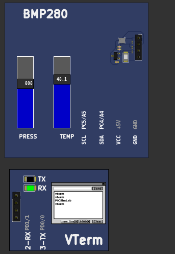</a></td>
<td width="20%" align=left ><a href="pzw/board_Arduino_Uno/atmega328p/BMP280.pzw" target="_blank" >Download (pzw)</a>
<br><br><a href="../js/picsimlab.html?../picsimlab_examples/pzw/board_Arduino_Uno/atmega328p/BMP280.pzw" target="_blank" >View Online</a><br><br>
</td></tr></table>
<hr><table style="width:100%" border="0" bgcolor='#efefef'>
<tr><td colspan=2 width="100%"><a name="board_Arduino_Uno_atmega328p_cardinfo"></a><small>[<a href='#board_Arduino_Uno_atmega328p'>atmega328p</a>/cardinfo]</small>  <h1>  SD card test </h1>
<pre>
  This example shows how use the utility libraries on which the'
  SD library is based in order to get info about your SD card.
  Very useful for testing a card when you're not sure whether its working or not.

  The circuit:
    SD card attached to SPI bus as follows:
 ** MOSI - pin 11 on Arduino Uno/Duemilanove/Diecimila
 ** MISO - pin 12 on Arduino Uno/Duemilanove/Diecimila
 ** CLK - pin 13 on Arduino Uno/Duemilanove/Diecimila
 ** CS - depends on your SD card shield or module.
 		Pin 4 used here for consistency with other Arduino examples


  created  28 Mar 2011
  by Limor Fried
  modified 9 Apr 2012
  by Tom Igoe
</pre>
<br>
<br> Click on sdcard connector to change sdcard file image.
<br>

<a href="https://github.com/arduino-libraries/SD/blob/master/examples/CardInfo/CardInfo.ino" target="_blank">CardInfo.ino</a><br><br></td></tr><tr><td width="80%" align=center><a target="blank_" href="board_Arduino_Uno/atmega328p/cardinfo/cardinfo.png"></a></td>
<td width="20%" align=left ><a href="pzw/board_Arduino_Uno/atmega328p/cardinfo.pzw" target="_blank" >Download (pzw)</a>
<br><br><a href="../js/picsimlab.html?../picsimlab_examples/pzw/board_Arduino_Uno/atmega328p/cardinfo.pzw" target="_blank" >View Online</a><br><br>
</td></tr></table>
<hr><table style="width:100%" border="0" bgcolor='#efefef'>
<tr><td colspan=2 width="100%"><a name="board_Arduino_Uno_atmega328p_ColorPallete"></a><small>[<a href='#board_Arduino_Uno_atmega328p'>atmega328p</a>/ColorPallete]</small>  <h1> FastLED Library - Color Palette example </h1>
<pre>
// This example shows several ways to set up and use 'palettes' of colors
// with FastLED.
//
// These compact palettes provide an easy way to re-colorize your
// animation on the fly, quickly, easily, and with low overhead.
//
// USING palettes is MUCH simpler in practice than in theory, so first just
// run this sketch, and watch the pretty lights as you then read through
// the code.  Although this sketch has eight (or more) different color schemes,
// the entire sketch compiles down to about 6.5K on AVR.
//
// FastLED provides a few pre-configured color palettes, and makes it
// extremely easy to make up your own color schemes with palettes.
//
// Some notes on the more abstract 'theory and practice' of
// FastLED compact palettes are at the bottom of this file.
</pre>
<br>
<br>
<a href="https://github.com/FastLED/FastLED/blob/master/examples/ColorPalette/ColorPalette.ino" target="_blank">ColorPalette.ino</a><br><br></td></tr><tr><td width="80%" align=center><a target="blank_" href="board_Arduino_Uno/atmega328p/ColorPallete/ColorPallete.gif">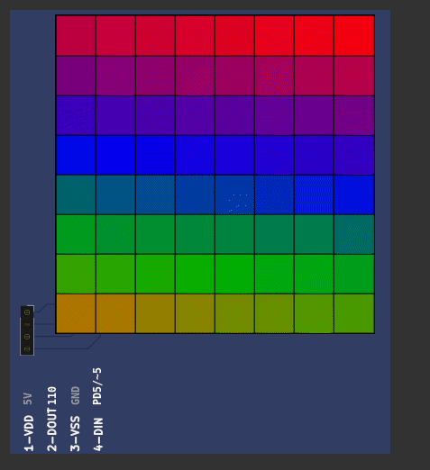</a></td>
<td width="20%" align=left ><a href="pzw/board_Arduino_Uno/atmega328p/ColorPallete.pzw" target="_blank" >Download (pzw)</a>
<br><br><a href="../js/picsimlab.html?../picsimlab_examples/pzw/board_Arduino_Uno/atmega328p/ColorPallete.pzw" target="_blank" >View Online</a><br><br>
</td></tr></table>
<hr><table style="width:100%" border="0" bgcolor='#efefef'>
<tr><td colspan=2 width="100%"><a name="board_Arduino_Uno_atmega328p_counter_dec"></a><small>[<a href='#board_Arduino_Uno_atmega328p'>atmega328p</a>/counter_dec]</small>  <h1>Counter with decoder</h1>
<pre>
Simple example of how to use the multiplexed 7-segment display with decoder 
</pre>


<a href="https://github.com/lcgamboa/picsimlab_examples/blob/master/docs/board_Arduino_Uno/atmega328p/counter_dec/src/counter_dec.ino" target="_blank">counter_dec.ino</a><br><br></td></tr><tr><td width="80%" align=center><a target="blank_" href="board_Arduino_Uno/atmega328p/counter_dec/counter_dec.png"></a></td>
<td width="20%" align=left ><a href="pzw/board_Arduino_Uno/atmega328p/counter_dec.pzw" target="_blank" >Download (pzw)</a>
<br><br><a href="../js/picsimlab.html?../picsimlab_examples/pzw/board_Arduino_Uno/atmega328p/counter_dec.pzw" target="_blank" >View Online</a><br><br>
</td></tr></table>
<hr><table style="width:100%" border="0" bgcolor='#efefef'>
<tr><td colspan=2 width="100%"><a name="board_Arduino_Uno_atmega328p_counter_latch"></a><small>[<a href='#board_Arduino_Uno_atmega328p'>atmega328p</a>/counter_latch]</small>  <h1>Counter with decoder and latch</h1>
<pre>
Simple example of how to use the latched 7-segment display with decoder 
</pre>


<a href="https://github.com/lcgamboa/picsimlab_examples/blob/master/docs/board_Arduino_Uno/atmega328p/counter_latch/src/counter_latch.ino" target="_blank">counter_latch.ino</a><br><br></td></tr><tr><td width="80%" align=center><a target="blank_" href="board_Arduino_Uno/atmega328p/counter_latch/counter_latch.png"></a></td>
<td width="20%" align=left ><a href="pzw/board_Arduino_Uno/atmega328p/counter_latch.pzw" target="_blank" >Download (pzw)</a>
<br><br><a href="../js/picsimlab.html?../picsimlab_examples/pzw/board_Arduino_Uno/atmega328p/counter_latch.pzw" target="_blank" >View Online</a><br><br>
</td></tr></table>
<hr><table style="width:100%" border="0" bgcolor='#efefef'>
<tr><td colspan=2 width="100%"><a name="board_Arduino_Uno_atmega328p_DHT11"></a><small>[<a href='#board_Arduino_Uno_atmega328p'>atmega328p</a>/DHT11]</small>  <h1>  DHT11 humidity and temperature sensor </h1>
<pre>
// Example testing sketch for various DHT humidity/temperature sensors
// Written by ladyada, public domain
//
// REQUIRES the following Arduino libraries:
// - DHT Sensor Library: https://github.com/adafruit/DHT-sensor-library
// - Adafruit Unified Sensor Lib: https://github.com/adafruit/Adafruit_Sensor
</pre>
<br>


<a href="https://github.com/adafruit/DHT-sensor-library/blob/master/examples/DHTtester/DHTtester.ino" target="_blank">DHTtester.ino</a><br><br></td></tr><tr><td width="80%" align=center><a target="blank_" href="board_Arduino_Uno/atmega328p/DHT11/DHT11.png">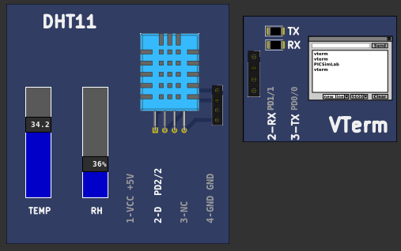</a></td>
<td width="20%" align=left ><a href="pzw/board_Arduino_Uno/atmega328p/DHT11.pzw" target="_blank" >Download (pzw)</a>
<br><br><a href="../js/picsimlab.html?../picsimlab_examples/pzw/board_Arduino_Uno/atmega328p/DHT11.pzw" target="_blank" >View Online</a><br><br>
</td></tr></table>
<hr><table style="width:100%" border="0" bgcolor='#efefef'>
<tr><td colspan=2 width="100%"><a name="board_Arduino_Uno_atmega328p_DHT22"></a><small>[<a href='#board_Arduino_Uno_atmega328p'>atmega328p</a>/DHT22]</small>  <h1>  DHT22 humidity and temperature sensor </h1>
<pre>
// Example testing sketch for various DHT humidity/temperature sensors
// Written by ladyada, public domain
//
// REQUIRES the following Arduino libraries:
// - DHT Sensor Library: https://github.com/adafruit/DHT-sensor-library
// - Adafruit Unified Sensor Lib: https://github.com/adafruit/Adafruit_Sensor
</pre>
<br>


<a href="https://github.com/adafruit/DHT-sensor-library/blob/master/examples/DHTtester/DHTtester.ino" target="_blank">DHTtester.ino</a><br><br></td></tr><tr><td width="80%" align=center><a target="blank_" href="board_Arduino_Uno/atmega328p/DHT22/DHT22.png">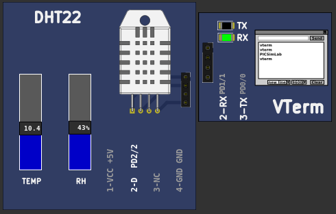</a></td>
<td width="20%" align=left ><a href="pzw/board_Arduino_Uno/atmega328p/DHT22.pzw" target="_blank" >Download (pzw)</a>
<br><br><a href="../js/picsimlab.html?../picsimlab_examples/pzw/board_Arduino_Uno/atmega328p/DHT22.pzw" target="_blank" >View Online</a><br><br>
</td></tr></table>
<hr><table style="width:100%" border="0" bgcolor='#efefef'>
<tr><td colspan=2 width="100%"><a name="board_Arduino_Uno_atmega328p_display_bargraph"></a><small>[<a href='#board_Arduino_Uno_atmega328p'>atmega328p</a>/display_bargraph]</small>  <h1>  LED bar graph</h1>
<pre>

  Turns on a series of LEDs based on the value of an analog sensor.
  This is a simple way to make a bar graph display. Though this graph uses 10
  LEDs, you can use any number by changing the LED count and the pins in the
  array.

  This method can be used to control any series of digital outputs that depends
  on an analog input.

  The circuit:
  - LEDs from pins 2 through 9 to ground

  created 4 Sep 2010
  by Tom Igoe

  This example code is in the public domain.

  http://www.arduino.cc/en/Tutorial/BarGraph
</pre>


<a href="https://github.com/lcgamboa/picsimlab_examples/blob/master/docs/board_Arduino_Uno/atmega328p/display_bargraph/src/barGraph.ino" target="_blank">barGraph.ino</a><br><br></td></tr><tr><td width="80%" align=center><a target="blank_" href="board_Arduino_Uno/atmega328p/display_bargraph/display_bargraph.png"></a></td>
<td width="20%" align=left ><a href="pzw/board_Arduino_Uno/atmega328p/display_bargraph.pzw" target="_blank" >Download (pzw)</a>
<br><br><a href="../js/picsimlab.html?../picsimlab_examples/pzw/board_Arduino_Uno/atmega328p/display_bargraph.pzw" target="_blank" >View Online</a><br><br>
</td></tr></table>
<hr><table style="width:100%" border="0" bgcolor='#efefef'>
<tr><td colspan=2 width="100%"><a name="board_Arduino_Uno_atmega328p_DS18B20"></a><small>[<a href='#board_Arduino_Uno_atmega328p'>atmega328p</a>/DS18B20]</small>  <h1>  DS18S20 Temperature sensor </h1>
<pre>
// OneWire DS18S20, DS18B20, DS1822 Temperature Example
//
// http://www.pjrc.com/teensy/td_libs_OneWire.html
//
// The DallasTemperature library can do all this work for you!
// https://github.com/milesburton/Arduino-Temperature-Control-Library
</pre>
<br>


<a href="https://github.com/PaulStoffregen/OneWire/blob/master/examples/DS18x20_Temperature/DS18x20_Temperature.ino" target="_blank">DS18x20_Temperature.ino</a><br><br></td></tr><tr><td width="80%" align=center><a target="blank_" href="board_Arduino_Uno/atmega328p/DS18B20/DS18B20.png">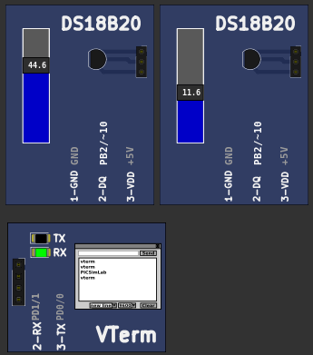</a></td>
<td width="20%" align=left ><a href="pzw/board_Arduino_Uno/atmega328p/DS18B20.pzw" target="_blank" >Download (pzw)</a>
<br><br><a href="../js/picsimlab.html?../picsimlab_examples/pzw/board_Arduino_Uno/atmega328p/DS18B20.pzw" target="_blank" >View Online</a><br><br>
</td></tr></table>
<hr><table style="width:100%" border="0" bgcolor='#efefef'>
<tr><td colspan=2 width="100%"><a name="board_Arduino_Uno_atmega328p_Encoder_basic"></a><small>[<a href='#board_Arduino_Uno_atmega328p'>atmega328p</a>/Encoder_basic]</small>  <h1> Encoder Library - Basic Example </h1>
<pre>
/* Encoder Library - Basic Example
 * http://www.pjrc.com/teensy/td_libs_Encoder.html
 *
 * This example code is in the public domain.
 */
</pre>
<br>
<br>
<a href="https://github.com/PaulStoffregen/Encoder/blob/master/examples/Basic/Basic.pde" target="_blank">Basic.pde</a><br><br></td></tr><tr><td width="80%" align=center><a target="blank_" href="board_Arduino_Uno/atmega328p/Encoder_basic/Encoder_basic.png">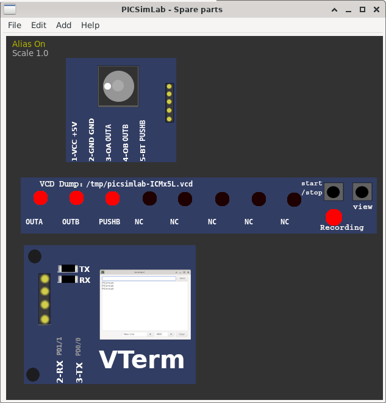</a></td>
<td width="20%" align=left ><a href="pzw/board_Arduino_Uno/atmega328p/Encoder_basic.pzw" target="_blank" >Download (pzw)</a>
<br><br><a href="../js/picsimlab.html?../picsimlab_examples/pzw/board_Arduino_Uno/atmega328p/Encoder_basic.pzw" target="_blank" >View Online</a><br><br>
</td></tr></table>
<hr><table style="width:100%" border="0" bgcolor='#efefef'>
<tr><td colspan=2 width="100%"><a name="board_Arduino_Uno_atmega328p_espmsim_server"></a><small>[<a href='#board_Arduino_Uno_atmega328p'>atmega328p</a>/espmsim_server]</small>  <h1> Serial esp8266/espmsim TCP server</h1>
<pre>
Open the esp8266 modem simulator in tools menu and connect the serial 
(or a real esp8266 connected in a real serial port).

To use the serial port, first configure the com0com or tty0tty as 
described in the help and open the serial terminal (cutecom).

When the server is loaded, open a browser in the address http://127.0.0.1:2000 

</pre>


<a href="https://github.com/lcgamboa/picsimlab_examples/blob/master/docs/board_Arduino_Uno/atmega328p/espmsim_server/src/espmsim_server.ino" target="_blank">espmsim_server.ino</a><br><br></td></tr><tr><td width="80%" align=center><a target="blank_" href="board_Arduino_Uno/atmega328p/espmsim_server/espmsim_server.png"></a></td>
<td width="20%" align=left ><a href="pzw/board_Arduino_Uno/atmega328p/espmsim_server.pzw" target="_blank" >Download (pzw)</a>
</td></tr></table>
<hr><table style="width:100%" border="0" bgcolor='#efefef'>
<tr><td colspan=2 width="100%"><a name="board_Arduino_Uno_atmega328p_firmata"></a><small>[<a href='#board_Arduino_Uno_atmega328p'>atmega328p</a>/firmata]</small>  <h1> Firmata Library - Standard Firmata  </h1>
<pre>
  Firmata is a generic protocol for communicating with microcontrollers
  from software on a host computer. It is intended to work with
  any host computer software package.
  To download a host software package, please click on the following link
  to open the list of Firmata client libraries in your default browser.
  https://github.com/firmata/arduino#firmata-client-libraries
  Copyright (C) 2006-2008 Hans-Christoph Steiner.  All rights reserved.
  Copyright (C) 2010-2011 Paul Stoffregen.  All rights reserved.
  Copyright (C) 2009 Shigeru Kobayashi.  All rights reserved.
  Copyright (C) 2009-2016 Jeff Hoefs.  All rights reserved.
  This library is free software; you can redistribute it and/or
  modify it under the terms of the GNU Lesser General Public
  License as published by the Free Software Foundation; either
  version 2.1 of the License, or (at your option) any later version.
  See file LICENSE.txt for further informations on licensing terms.
  Last updated August 17th, 2017
</pre>
<br>
<br>
<a href="https://github.com/firmata/arduino/blob/master/examples/StandardFirmata/StandardFirmata.ino" target="_blank">StandardFirmata.ino</a><br><br></td></tr><tr><td width="80%" align=center><a target="blank_" href="board_Arduino_Uno/atmega328p/firmata/firmata.png"></a></td>
<td width="20%" align=left ><a href="pzw/board_Arduino_Uno/atmega328p/firmata.pzw" target="_blank" >Download (pzw)</a>
</td></tr></table>
<hr><table style="width:100%" border="0" bgcolor='#efefef'>
<tr><td colspan=2 width="100%"><a name="board_Arduino_Uno_atmega328p_firmata_ethernet"></a><small>[<a href='#board_Arduino_Uno_atmega328p'>atmega328p</a>/firmata_ethernet]</small>  <h1> Firmata Library - Standard Firmata Ethernet </h1>
<pre>
  StandardFirmataEthernet is a TCP client/server implementation. You will need a Firmata client library
  with a network transport that can act as a TCP server or client in order to establish a connection between
  StandardFirmataEthernet and the Firmata client application.
  To use StandardFirmataEthernet you will need to have one of the following
  boards or shields:
  - Arduino Ethernet shield (or clone)
  - Arduino Ethernet board (or clone)
  - Arduino Yun
  Follow the instructions in the ethernetConfig.h file (ethernetConfig.h tab in Arduino IDE) to
  configure your particular hardware.
  NOTE: If you are using an Arduino Ethernet shield you cannot use the following pins on
  the following boards. Firmata will ignore any requests to use these pins:
  - Arduino Uno or other ATMega328 boards: (D4, D10, D11, D12, D13)
  - Arduino Mega: (D4, D10, D50, D51, D52, D53)
  - Arduino Leonardo: (D4, D10)
  - Arduino Due: (D4, D10)
  - Arduino Zero: (D4, D10)
  If you are using an ArduinoEthernet board, the following pins cannot be used (same as Uno):
  - D4, D10, D11, D12, D13
</pre>
<br>
<br>
<a href="https://github.com/firmata/arduino/blob/master/examples/StandardFirmataEthernet/StandardFirmataEthernet.ino" target="_blank">StandardFirmataEthernet.ino</a><br><br></td></tr><tr><td width="80%" align=center><a target="blank_" href="board_Arduino_Uno/atmega328p/firmata_ethernet/firmata_ethernet.png"></a></td>
<td width="20%" align=left ><a href="pzw/board_Arduino_Uno/atmega328p/firmata_ethernet.pzw" target="_blank" >Download (pzw)</a>
</td></tr></table>
<hr><table style="width:100%" border="0" bgcolor='#efefef'>
<tr><td colspan=2 width="100%"><a name="board_Arduino_Uno_atmega328p_FreeRtos"></a><small>[<a href='#board_Arduino_Uno_atmega328p'>atmega328p</a>/FreeRtos]</small>  <h1> Projeto simples com FreeRTOS e Arduino </h1>
<pre>

Principais conceitos de RTOS para iniciantes com Arduino e FreeRTOS escrito por Pedro Bertoleti.

<br>
<a href="https://embarcados.com.br/rtos-para-iniciantes-com-arduino-e-freertos/" target="_blank">Artigo Original no site Embarcados</a><br><br></td></tr><tr><td width="80%" align=center><a target="blank_" href="board_Arduino_Uno/atmega328p/FreeRtos/FreeRtos.png">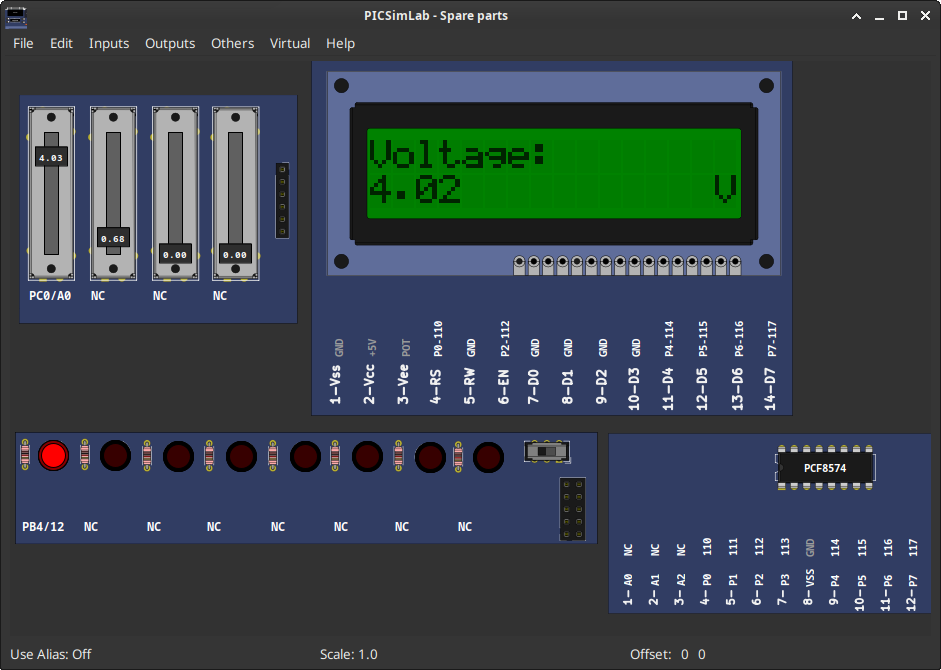</a></td>
<td width="20%" align=left ><a href="pzw/board_Arduino_Uno/atmega328p/FreeRtos.pzw" target="_blank" >Download (pzw)</a>
</td></tr></table>
<hr><table style="width:100%" border="0" bgcolor='#efefef'>
<tr><td colspan=2 width="100%"><a name="board_Arduino_Uno_atmega328p_game_lcd"></a><small>[<a href='#board_Arduino_Uno_atmega328p'>atmega328p</a>/game_lcd]</small>  <h1>Arduino LCD Game</h1>
<pre>
//  _ ___ _______     ___ ___ ___  ___ _   _ ___ _____ ___ 
// / |_  )__ /   \   / __|_ _| _ \/ __| | | |_ _|_   _/ __| 
// | |/ / |_ \ |) | | (__ | ||   / (__| |_| || |  | | \__ \ 
// |_/___|___/___/   \___|___|_|_\\___|\___/|___| |_| |___/ 
// 
// Arduino LCD Game
// 
// Made by 123d Circuits
// License: CC-BY-SA 3.0
// Downloaded from: <a href="https://circuits.io/circuits/1073419-arduino-lcd-game" target="_blank">https://circuits.io/circuits/1073419-arduino-lcd-game</a>

</pre>

Play using gamepad A button (mapped as computer keyboard "i" key)
<br>
<br>


<a href="https://github.com/lcgamboa/picsimlab_examples/blob/master/docs/board_Arduino_Uno/atmega328p/game_lcd/src/ArduinoLCDGame.ino" target="_blank">ArduinoLCDGame.ino</a><br><br></td></tr><tr><td width="80%" align=center><a target="blank_" href="board_Arduino_Uno/atmega328p/game_lcd/game_lcd.png"></a></td>
<td width="20%" align=left ><a href="pzw/board_Arduino_Uno/atmega328p/game_lcd.pzw" target="_blank" >Download (pzw)</a>
<br><br><a href="../js/picsimlab.html?../picsimlab_examples/pzw/board_Arduino_Uno/atmega328p/game_lcd.pzw" target="_blank" >View Online</a><br><br>
</td></tr></table>
<hr><table style="width:100%" border="0" bgcolor='#efefef'>
<tr><td colspan=2 width="100%"><a name="board_Arduino_Uno_atmega328p_game_marduino"></a><small>[<a href='#board_Arduino_Uno_atmega328p'>atmega328p</a>/game_marduino]</small>  <h1>Super Marduino</h1>
<pre>
 * Super Marduino
 * A platform game with Arduino Uno.
 * 
 * Requirements:
 * Nokia 5510 display and three buttons.
 * Additional libraries: Adafruit GFX and Adafruit_PCD8544.
 * 
 * Created by Tobias Beise Ulrich
 * 
 * GitHub:
 * <a href ="https://github.com/tobiasbu/marduino" target="_blank">https://github.com/tobiasbu/marduino</a>
</pre>
<br>
Play using gamepad:
<br>
Select or Jump:  A button (mapped as computer keyboard "i" key)<br>
Right         :  B button (mapped as computer keyboard "l" key)<br>
Left          :  D button (mapped as computer keyboard "j" key)<br>
<br>
<br>

<a href="https://github.com/lcgamboa/picsimlab_examples/tree/master/docs/board_Arduino_Uno/atmega328p/game_marduino/src" target="_blank">marduino source</a><br><br></td></tr><tr><td width="80%" align=center><a target="blank_" href="board_Arduino_Uno/atmega328p/game_marduino/game_marduino.png"></a></td>
<td width="20%" align=left ><a href="pzw/board_Arduino_Uno/atmega328p/game_marduino.pzw" target="_blank" >Download (pzw)</a>
<br><br><a href="../js/picsimlab.html?../picsimlab_examples/pzw/board_Arduino_Uno/atmega328p/game_marduino.pzw" target="_blank" >View Online</a><br><br>
</td></tr></table>
<hr><table style="width:100%" border="0" bgcolor='#efefef'>
<tr><td colspan=2 width="100%"><a name="board_Arduino_Uno_atmega328p_game_snake"></a><small>[<a href='#board_Arduino_Uno_atmega328p'>atmega328p</a>/game_snake]</small>  <h1>Snake Game</h1>
<pre>

/**** Snake Game by Abhinav Faujdar *****/

</pre>

<br>
Play using gamepad:
<br>
Up         :  A button (mapped as computer keyboard "i" key)<br>
Down       :  C button (mapped as computer keyboard "k" key)<br>
Right      :  B button (mapped as computer keyboard "l" key)<br>
Left       :  D button (mapped as computer keyboard "j" key)<br>
Pause      :  E button (mapped as computer keyboard "e" key)<br>
<br>
<br>
<br>
<a href="https://github.com/lcgamboa/picsimlab_examples/blob/master/docs/board_Arduino_Uno/atmega328p/game_snake/src/snake.ino" target="_blank">snake.ino</a><br><br></td></tr><tr><td width="80%" align=center><a target="blank_" href="board_Arduino_Uno/atmega328p/game_snake/game_snake.png">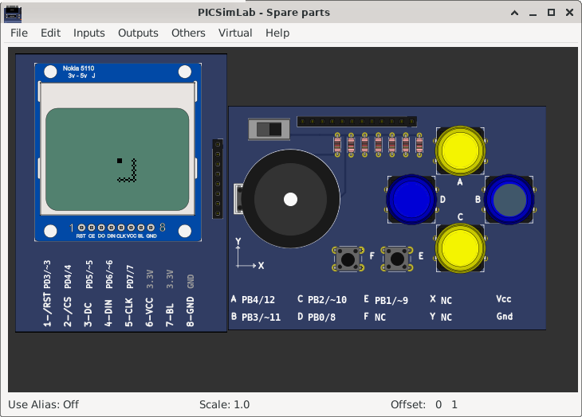</a></td>
<td width="20%" align=left ><a href="pzw/board_Arduino_Uno/atmega328p/game_snake.pzw" target="_blank" >Download (pzw)</a>
<br><br><a href="../js/picsimlab.html?../picsimlab_examples/pzw/board_Arduino_Uno/atmega328p/game_snake.pzw" target="_blank" >View Online</a><br><br>
</td></tr></table>
<hr><table style="width:100%" border="0" bgcolor='#efefef'>
<tr><td colspan=2 width="100%"><a name="board_Arduino_Uno_atmega328p_IO_expander"></a><small>[<a href='#board_Arduino_Uno_atmega328p'>atmega328p</a>/IO_expander]</small>  <h1> MCP23S17 IO expander </h1>
<pre>
   MCP23S17_outtest.ino
  
   <a href="https://github.com/MajenkoLibraries/MCP23S17" target="_blank" >MCP23S17 library example</a>

</pre>


<a href="https://github.com/lcgamboa/picsimlab_examples/blob/master/docs/board_Arduino_Uno/atmega328p/IO_expander/src/MCP23S17_outtest.ino" target="_blank">MCP23S17_outtest.ino</a><br><br></td></tr><tr><td width="80%" align=center><a target="blank_" href="board_Arduino_Uno/atmega328p/IO_expander/IO_expander.png"></a></td>
<td width="20%" align=left ><a href="pzw/board_Arduino_Uno/atmega328p/IO_expander.pzw" target="_blank" >Download (pzw)</a>
<br><br><a href="../js/picsimlab.html?../picsimlab_examples/pzw/board_Arduino_Uno/atmega328p/IO_expander.pzw" target="_blank" >View Online</a><br><br>
</td></tr></table>
<hr><table style="width:100%" border="0" bgcolor='#efefef'>
<tr><td colspan=2 width="100%"><a name="board_Arduino_Uno_atmega328p_l293_motor"></a><small>[<a href='#board_Arduino_Uno_atmega328p'>atmega328p</a>/l293_motor]</small>  <h1> L293 Library - MotorControl Demo </h1>
<pre>
 * Bidirectional Motor Control with standalone L293
 *
 * Example of using L293 library to control one or more DC Birirectional Motors with the standalone configuration of the L293
 *
 * Created by Giuseppe Masino, 25 may 2016
 * Author URL http://www.facebook.com/dev.giuseppemasino
 *
 * This work is licensed under the Creative Commons Attribution-ShareAlike 4.0 International License.
 * To view a copy of this license, visit http://creativecommons.org/licenses/by-sa/4.0/.
 *
</pre>
<br>
<br>
<a href="https://github.com/qub1750ul/Arduino_L293/blob/develop/examples/MotorControl_Demo/MotorControl_Demo.ino" target="_blank">MotorControl_Demo.ino</a><br><br></td></tr><tr><td width="80%" align=center><a target="blank_" href="board_Arduino_Uno/atmega328p/l293_motor/l293_motor.png">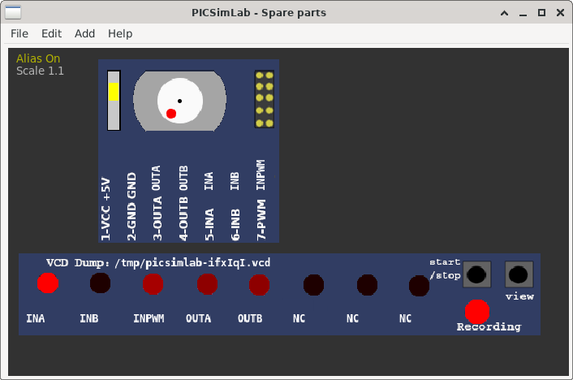</a></td>
<td width="20%" align=left ><a href="pzw/board_Arduino_Uno/atmega328p/l293_motor.pzw" target="_blank" >Download (pzw)</a>
<br><br><a href="../js/picsimlab.html?../picsimlab_examples/pzw/board_Arduino_Uno/atmega328p/l293_motor.pzw" target="_blank" >View Online</a><br><br>
</td></tr></table>
<hr><table style="width:100%" border="0" bgcolor='#efefef'>
<tr><td colspan=2 width="100%"><a name="board_Arduino_Uno_atmega328p_LCD_hd44780"></a><small>[<a href='#board_Arduino_Uno_atmega328p'>atmega328p</a>/LCD_hd44780]</small>  <h1>LCD hd44780 -  LiquidCrystal Library - Custom Characters  </h1>
<pre>
 Demonstrates how to add custom characters on an LCD  display.
 The LiquidCrystal library works with all LCD displays that are
 compatible with the  Hitachi HD44780 driver. There are many of
 them out there, and you can usually tell them by the 16-pin interface.

 This sketch prints "I <heart> Arduino!" and a little dancing man
 to the LCD.

  The circuit:
 * LCD RS pin to digital pin 12
 * LCD Enable pin to digital pin 11
 * LCD D4 pin to digital pin 5
 * LCD D5 pin to digital pin 4
 * LCD D6 pin to digital pin 3
 * LCD D7 pin to digital pin 2
 * LCD R/W pin to ground
 * 10K potentiometer:
 * ends to +5V and ground
 * wiper to LCD VO pin (pin 3)
 * 10K poterntiometer on pin A0

 created 21 Mar 2011
 by Tom Igoe
 modified 11 Nov 2013
 by Scott Fitzgerald
 modified 7 Nov 2016
 by Arturo Guadalupi

 Based on Adafruit's example at
 https://github.com/adafruit/SPI_VFD/blob/master/examples/createChar/createChar.pde

 This example code is in the public domain.
 http://www.arduino.cc/en/Tutorial/LiquidCrystalCustomCharacter

 Also useful:
 http://icontexto.com/charactercreator/

</pre>


<a href="https://github.com/lcgamboa/picsimlab_examples/blob/master/docs/board_Arduino_Uno/atmega328p/LCD_hd44780/src/CustomCharacter.ino" target="_blank">CustomCharacter.ino</a><br><br></td></tr><tr><td width="80%" align=center><a target="blank_" href="board_Arduino_Uno/atmega328p/LCD_hd44780/LCD_hd44780.png"></a></td>
<td width="20%" align=left ><a href="pzw/board_Arduino_Uno/atmega328p/LCD_hd44780.pzw" target="_blank" >Download (pzw)</a>
<br><br><a href="../js/picsimlab.html?../picsimlab_examples/pzw/board_Arduino_Uno/atmega328p/LCD_hd44780.pzw" target="_blank" >View Online</a><br><br>
</td></tr></table>
<hr><table style="width:100%" border="0" bgcolor='#efefef'>
<tr><td colspan=2 width="100%"><a name="board_Arduino_Uno_atmega328p_LCD_pcd8544"></a><small>[<a href='#board_Arduino_Uno_atmega328p'>atmega328p</a>/LCD_pcd8544]</small>  <h1> pcd8544  Graphics Test </h1>
<pre>
  GraphicsTest.pde
   
  Universal 8bit Graphics Library, https://github.com/olikraus/u8glib/
  
  Copyright (c) 2012, olikraus@gmail.com
  All rights reserved.
</pre>


<a href="https://github.com/lcgamboa/picsimlab_examples/blob/master/docs/board_Arduino_Uno/atmega328p/LCD_pcd8544/src/GraphicsTest.ino" target="_blank">GraphicsTest.ino</a><br><br></td></tr><tr><td width="80%" align=center><a target="blank_" href="board_Arduino_Uno/atmega328p/LCD_pcd8544/LCD_pcd8544.png">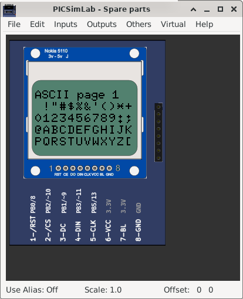</a></td>
<td width="20%" align=left ><a href="pzw/board_Arduino_Uno/atmega328p/LCD_pcd8544.pzw" target="_blank" >Download (pzw)</a>
<br><br><a href="../js/picsimlab.html?../picsimlab_examples/pzw/board_Arduino_Uno/atmega328p/LCD_pcd8544.pzw" target="_blank" >View Online</a><br><br>
</td></tr></table>
<hr><table style="width:100%" border="0" bgcolor='#efefef'>
<tr><td colspan=2 width="100%"><a name="board_Arduino_Uno_atmega328p_LCD_pcd8544_test"></a><small>[<a href='#board_Arduino_Uno_atmega328p'>atmega328p</a>/LCD_pcd8544_test]</small>  <h1> pcd8544 Test </h1>
<pre>

This is an example sketch for our Monochrome Nokia 5110 LCD Displays

  Pick one up today in the adafruit shop!
  ------> http://www.adafruit.com/products/338

These displays use SPI to communicate, 4 or 5 pins are required to
interface

Adafruit invests time and resources providing this open source code,
please support Adafruit and open-source hardware by purchasing
products from Adafruit!

Written by Limor Fried/Ladyada  for Adafruit Industries.
BSD license, check license.txt for more information
All text above, and the splash screen must be included in any redistribution

</pre>
<br><a href="https://github.com/adafruit/Adafruit-PCD8544-Nokia-5110-LCD-library/blob/master/examples/pcdtest/pcdtest.ino" target="_blank">Original Github</a>
<br>
<br>
<a href="https://github.com/lcgamboa/picsimlab_examples/blob/master/docs/board_Arduino_Uno/atmega328p/LCD_pcd8544_test/src/pcdtest.ino" target="_blank">pcdtest.ino</a><br><br></td></tr><tr><td width="80%" align=center><a target="blank_" href="board_Arduino_Uno/atmega328p/LCD_pcd8544_test/LCD_pcd8544_test.png">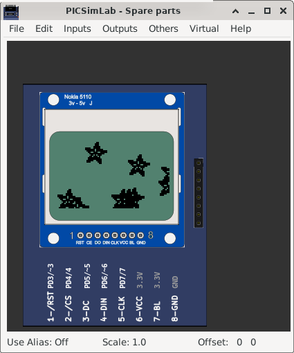</a></td>
<td width="20%" align=left ><a href="pzw/board_Arduino_Uno/atmega328p/LCD_pcd8544_test.pzw" target="_blank" >Download (pzw)</a>
<br><br><a href="../js/picsimlab.html?../picsimlab_examples/pzw/board_Arduino_Uno/atmega328p/LCD_pcd8544_test.pzw" target="_blank" >View Online</a><br><br>
</td></tr></table>
<hr><table style="width:100%" border="0" bgcolor='#efefef'>
<tr><td colspan=2 width="100%"><a name="board_Arduino_Uno_atmega328p_LCD_pcf8833"></a><small>[<a href='#board_Arduino_Uno_atmega328p'>atmega328p</a>/LCD_pcf8833]</small>  <h1> pcf8833  Graphics Test </h1>
<pre>
  GraphicsTest.ino
  
  Generate some example graphics

  Universal uC Color Graphics Library
  
  Copyright (c) 2014, olikraus@gmail.com
  All rights reserved.

</pre>


<a href="https://github.com/lcgamboa/picsimlab_examples/blob/master/docs/board_Arduino_Uno/atmega328p/LCD_pcf8833/src/GraphicsTest.ino" target="_blank">GraphicsTest.ino</a><br><br></td></tr><tr><td width="80%" align=center><a target="blank_" href="board_Arduino_Uno/atmega328p/LCD_pcf8833/LCD_pcf8833.png"></a></td>
<td width="20%" align=left ><a href="pzw/board_Arduino_Uno/atmega328p/LCD_pcf8833.pzw" target="_blank" >Download (pzw)</a>
<br><br><a href="../js/picsimlab.html?../picsimlab_examples/pzw/board_Arduino_Uno/atmega328p/LCD_pcf8833.pzw" target="_blank" >View Online</a><br><br>
</td></tr></table>
<hr><table style="width:100%" border="0" bgcolor='#efefef'>
<tr><td colspan=2 width="100%"><a name="board_Arduino_Uno_atmega328p_lcd_ssd1306"></a><small>[<a href='#board_Arduino_Uno_atmega328p'>atmega328p</a>/lcd_ssd1306]</small>  <h1> library lcdgfx example: ssd1306_demo </h1>
<pre>
/**
 *   Attiny85 PINS (i2c)
 *             ____
 *   RESET   -|_|  |- 3V
 *   SCL (3) -|    |- (2)
 *   SDA (4) -|    |- (1)
 *   GND     -|____|- (0)
 *
 *   Attiny SPI PINS:     connect LCD to D4 (D/C), GND (CS), D3 (RES), D1(DIN), D2(CLK)
 *
 *   Nano/Atmega328 PINS: connect LCD to A4/A5 (i2c)
 *   ESP8266: GPIO4(SDA) / GPIO5( SCL )
 *   STM32: B7(SDA), B6(SCL)
 */
</pre>


<a href="https://github.com/lexus2k/lcdgfx/blob/master/examples/demos/ssd1306_demo/ssd1306_demo.ino" target="_blank">ssd1306_demo.ino</a><br><br></td></tr><tr><td width="80%" align=center><a target="blank_" href="board_Arduino_Uno/atmega328p/lcd_ssd1306/lcd_ssd1306.png"></a></td>
<td width="20%" align=left ><a href="pzw/board_Arduino_Uno/atmega328p/lcd_ssd1306.pzw" target="_blank" >Download (pzw)</a>
<br><br><a href="../js/picsimlab.html?../picsimlab_examples/pzw/board_Arduino_Uno/atmega328p/lcd_ssd1306.pzw" target="_blank" >View Online</a><br><br>
</td></tr></table>
<hr><table style="width:100%" border="0" bgcolor='#efefef'>
<tr><td colspan=2 width="100%"><a name="board_Arduino_Uno_atmega328p_lcd_ssd1306_i2c"></a><small>[<a href='#board_Arduino_Uno_atmega328p'>atmega328p</a>/lcd_ssd1306_i2c]</small>  <h1> library lcdgfx example: ssd1306_demo </h1>
<pre>
/**
 *   Attiny85 PINS (i2c)
 *             ____
 *   RESET   -|_|  |- 3V
 *   SCL (3) -|    |- (2)
 *   SDA (4) -|    |- (1)
 *   GND     -|____|- (0)
 *
 *   Attiny SPI PINS:     connect LCD to D4 (D/C), GND (CS), D3 (RES), D1(DIN), D2(CLK)
 *
 *   Nano/Atmega328 PINS: connect LCD to A4/A5 (i2c)
 *   ESP8266: GPIO4(SDA) / GPIO5( SCL )
 *   STM32: B7(SDA), B6(SCL)
 */
</pre>


<a href="https://github.com/lexus2k/lcdgfx/blob/master/examples/demos/ssd1306_demo/ssd1306_demo.ino" target="_blank">ssd1306_demo.ino</a><br><br></td></tr><tr><td width="80%" align=center><a target="blank_" href="board_Arduino_Uno/atmega328p/lcd_ssd1306_i2c/lcd_ssd1306_i2c.png"></a></td>
<td width="20%" align=left ><a href="pzw/board_Arduino_Uno/atmega328p/lcd_ssd1306_i2c.pzw" target="_blank" >Download (pzw)</a>
</td></tr></table>
<hr><table style="width:100%" border="0" bgcolor='#efefef'>
<tr><td colspan=2 width="100%"><a name="board_Arduino_Uno_atmega328p_LED_matrix_MAX72xx"></a><small>[<a href='#board_Arduino_Uno_atmega328p'>atmega328p</a>/LED_matrix_MAX72xx]</small>  <h1> LED matrix MAX7211 </h1>
<pre>
   matriz_led.ino
  
   Exemplo PONG
   Livro Arduino Básico de Michael McRoberts

</pre>


<a href="https://github.com/lcgamboa/picsimlab_examples/blob/master/docs/board_Arduino_Uno/atmega328p/LED_matrix_MAX72xx/src/matriz_led.ino" target="_blank">matriz_led.ino</a><br><br></td></tr><tr><td width="80%" align=center><a target="blank_" href="board_Arduino_Uno/atmega328p/LED_matrix_MAX72xx/LED_matrix_MAX72xx.png"></a></td>
<td width="20%" align=left ><a href="pzw/board_Arduino_Uno/atmega328p/LED_matrix_MAX72xx.pzw" target="_blank" >Download (pzw)</a>
<br><br><a href="../js/picsimlab.html?../picsimlab_examples/pzw/board_Arduino_Uno/atmega328p/LED_matrix_MAX72xx.pzw" target="_blank" >View Online</a><br><br>
</td></tr></table>
<hr><table style="width:100%" border="0" bgcolor='#efefef'>
<tr><td colspan=2 width="100%"><a name="board_Arduino_Uno_atmega328p_LED_matrix_scroll"></a><small>[<a href='#board_Arduino_Uno_atmega328p'>atmega328p</a>/LED_matrix_scroll]</small>  <h1> LED matrix MAX7211 scroll </h1>
<pre>
   Ticker.ino
  
   Max72xxPanel library example

</pre>


<a href="https://github.com/lcgamboa/picsimlab_examples/blob/master/docs/board_Arduino_Uno/atmega328p/LED_matrix_scroll/src/Ticker.ino" target="_blank">Ticker.ino</a><br><br></td></tr><tr><td width="80%" align=center><a target="blank_" href="board_Arduino_Uno/atmega328p/LED_matrix_scroll/LED_matrix_scroll.png"></a></td>
<td width="20%" align=left ><a href="pzw/board_Arduino_Uno/atmega328p/LED_matrix_scroll.pzw" target="_blank" >Download (pzw)</a>
<br><br><a href="../js/picsimlab.html?../picsimlab_examples/pzw/board_Arduino_Uno/atmega328p/LED_matrix_scroll.pzw" target="_blank" >View Online</a><br><br>
</td></tr></table>
<hr><table style="width:100%" border="0" bgcolor='#efefef'>
<tr><td colspan=2 width="100%"><a name="board_Arduino_Uno_atmega328p_lode_runner"></a><small>[<a href='#board_Arduino_Uno_atmega328p'>atmega328p</a>/lode_runner]</small>  <h1> Library lcdgfx example: lode runner </h1>
<pre>
/*
 *   Attiny85 PINS
 *             ____
 *   RESET   -|_|  |- 3V
 *   SCL (3) -|    |- (2)
 *   SDA (4) -|    |- (1) - BUZZER
 *   GND     -|____|- (0) - BUTTONS module
 *
 *   Atmega328 PINS with i2c SSD1306 to A4/A5, BUZZER on D8,
 *   Z-keypad ADC module on A0 pin.
 *   If you want to use GPIO keys, uncomment USE_GPIO_BUTTONS below
 *
 *   Atmega328 PINS with spi Nokia 5110 LCD:
 *   LCD RST to D3
 *   LCD CES to D4
 *   LCD DC to  D5
 *   LCD DIN to D11
 *   LCD CLK to D13
 *   LCD BL to  VCC
 */
</pre>
<br>
<br>Play using gamepad (analogic):
<br>Up:     B button (mapped as computer keyboard "i" key)
<br>Right:  A button (mapped as computer keyboard "l" key)
<br>Left:   D button (mapped as computer keyboard "j" key)
<br>Down:   C button (mapped as computer keyboard "k" key) 
<br>
<br>
<a href="https://github.com/lexus2k/lcdgfx/blob/master/examples/games/lode_runner/lode_runner.ino" target="_blank">lode_runner.ino</a><br><br></td></tr><tr><td width="80%" align=center><a target="blank_" href="board_Arduino_Uno/atmega328p/lode_runner/lode_runner.png"></a></td>
<td width="20%" align=left ><a href="pzw/board_Arduino_Uno/atmega328p/lode_runner.pzw" target="_blank" >Download (pzw)</a>
<br><br><a href="../js/picsimlab.html?../picsimlab_examples/pzw/board_Arduino_Uno/atmega328p/lode_runner.pzw" target="_blank" >View Online</a><br><br>
</td></tr></table>
<hr><table style="width:100%" border="0" bgcolor='#efefef'>
<tr><td colspan=2 width="100%"><a name="board_Arduino_Uno_atmega328p_Oscilloscope"></a><small>[<a href='#board_Arduino_Uno_atmega328p'>atmega328p</a>/Oscilloscope]</small>  <h1>  Arduino Uno 3V Oscilloscope </h1>
<pre>
This is my version of the Arduino oscilloscope code.  This file is strictly the display code for 
one analog channel.  It will soon be merged into my data logger project.

This is shared so others may incorporate the display code into their projects.  It has been modified to 
play nice with the Adafruit 5110 LCD library.

This is a work in progress but hopefully it will help someone else by providing
a base to start and work from.

Please check out my Youtube videos here and consider a thumbs up if this helped you!
Youtube : <a href="http://www.youtube.com/mkmeorg">http://www.youtube.com/mkmeorg</a>

Full Arduino Tutorial Playlist here: <a href="https://www.youtube.com/playlist?list=PLxyM2a_cfnzjXms2WRO9OdAr-_7K-Ve2Z">https://www.youtube.com/playlist?list=PLxyM2a_cfnzjXms2WRO9OdAr-_7K-Ve2Z</a>

Original code comment text:
###########################################################
  Title:       Arduino Uno 3V Oscilloscope
  Purpose:     Use a Nokia 5110 LCD screen with the arduino
  Created by:  Brian O'Dell from the Fileark Arduino Oscilloscope.
  Note:        Please reuse, repurpose, and redistribute this code.
  Note:        This code uses the Adafruit PDC8544 LCD library  
###########################################################
<a href="https://github.com/Megamemnon/Arduino-Oscilloscope/blob/master/Uno3VOScope.ino">https://github.com/Megamemnon/Arduino-Oscilloscope/blob/master/Uno3VOScope.ino</a>
</pre>


<a href="https://github.com/lcgamboa/picsimlab_examples/blob/master/docs/board_Arduino_Uno/atmega328p/Oscilloscope/src/oscilloscope.ino" target="_blank">oscilloscope.ino</a><br><br></td></tr><tr><td width="80%" align=center><a target="blank_" href="board_Arduino_Uno/atmega328p/Oscilloscope/Oscilloscope.png"></a></td>
<td width="20%" align=left ><a href="pzw/board_Arduino_Uno/atmega328p/Oscilloscope.pzw" target="_blank" >Download (pzw)</a>
<br><br><a href="../js/picsimlab.html?../picsimlab_examples/pzw/board_Arduino_Uno/atmega328p/Oscilloscope.pzw" target="_blank" >View Online</a><br><br>
</td></tr></table>
<hr><table style="width:100%" border="0" bgcolor='#efefef'>
<tr><td colspan=2 width="100%"><a name="board_Arduino_Uno_atmega328p_Piano"></a><small>[<a href='#board_Arduino_Uno_atmega328p'>atmega328p</a>/Piano]</small>  <h1> Arduino Piano </h1>
<pre>
Arduino Tutorial Mini Piano

Visit the Channel for more interesting projects

<a href="https://www.youtube.com/channel/UCks-9JSnVb22dlqtMgPjrlg">https://www.youtube.com/channel/UCks-9JSnVb22dlqtMgPjrlg</a>
</pre>


<a href="https://github.com/lcgamboa/picsimlab_examples/blob/master/docs/board_Arduino_Uno/atmega328p/Piano/src/piano.ino" target="_blank">piano.ino</a><br><br></td></tr><tr><td width="80%" align=center><a target="blank_" href="board_Arduino_Uno/atmega328p/Piano/Piano.png"></a></td>
<td width="20%" align=left ><a href="pzw/board_Arduino_Uno/atmega328p/Piano.pzw" target="_blank" >Download (pzw)</a>
<br><br><a href="../js/picsimlab.html?../picsimlab_examples/pzw/board_Arduino_Uno/atmega328p/Piano.pzw" target="_blank" >View Online</a><br><br>
</td></tr></table>
<hr><table style="width:100%" border="0" bgcolor='#efefef'>
<tr><td colspan=2 width="100%"><a name="board_Arduino_Uno_atmega328p_rc_receiver"></a><small>[<a href='#board_Arduino_Uno_atmega328p'>atmega328p</a>/rc_receiver]</small>  <h1> library rc-switch example: ReceiveDemo Simple </h1>
<pre>
/*
  Simple example for receiving
  
  https://github.com/sui77/rc-switch/
*/
</pre>
<br>
<br>Press the play button on VCD play part to send the recorded code to microcontroller input.
<br>
<a href="https://github.com/sui77/rc-switch/blob/master/examples/ReceiveDemo_Simple/ReceiveDemo_Simple.ino" target="_blank">ReceiveDemo_Simple.ino</a><br><br></td></tr><tr><td width="80%" align=center><a target="blank_" href="board_Arduino_Uno/atmega328p/rc_receiver/rc_receiver.png"></a></td>
<td width="20%" align=left ><a href="pzw/board_Arduino_Uno/atmega328p/rc_receiver.pzw" target="_blank" >Download (pzw)</a>
<br><br><a href="../js/picsimlab.html?../picsimlab_examples/pzw/board_Arduino_Uno/atmega328p/rc_receiver.pzw" target="_blank" >View Online</a><br><br>
</td></tr></table>
<hr><table style="width:100%" border="0" bgcolor='#efefef'>
<tr><td colspan=2 width="100%"><a name="board_Arduino_Uno_atmega328p_sdformatter"></a><small>[<a href='#board_Arduino_Uno_atmega328p'>atmega328p</a>/sdformatter]</small>  <h1>  Sd Formatter </h1>
<pre>
/*
 * This program will format SD/SDHC/SDXC cards.
 * Warning all data will be deleted!
 *
 * This program attempts to match the format
 * generated by SDFormatter available here:
 *
 * http://www.sdcard.org/consumers/formatter/
 *
 * For very small cards this program uses FAT16
 * and the above SDFormatter uses FAT12.
 */
</pre>
<br>
<br> Click on sdcard connector to change sdcard file image.
<br>
<a href="https://github.com/greiman/SdFat/blob/master/examples/SdFormatter/SdFormatter.ino" target="_blank">SdFormatter.ino</a><br><br></td></tr><tr><td width="80%" align=center><a target="blank_" href="board_Arduino_Uno/atmega328p/sdformatter/sdformatter.png"></a></td>
<td width="20%" align=left ><a href="pzw/board_Arduino_Uno/atmega328p/sdformatter.pzw" target="_blank" >Download (pzw)</a>
<br><br><a href="../js/picsimlab.html?../picsimlab_examples/pzw/board_Arduino_Uno/atmega328p/sdformatter.pzw" target="_blank" >View Online</a><br><br>
</td></tr></table>
<hr><table style="width:100%" border="0" bgcolor='#efefef'>
<tr><td colspan=2 width="100%"><a name="board_Arduino_Uno_atmega328p_Serial_LCD"></a><small>[<a href='#board_Arduino_Uno_atmega328p'>atmega328p</a>/Serial_LCD]</small>  <h1> Serial LCD LiquidCrystal_I2C</h1>
<pre>
LiquidCrystal_I2C CustomChars example
//YWROBOT
//Compatible with the Arduino IDE 1.0
//Library version:1.1
</pre>


<a href="https://github.com/lcgamboa/picsimlab_examples/blob/master/docs/board_Arduino_Uno/atmega328p/Serial_LCD/src/CustomChars.ino" target="_blank">CustomChars.ino</a><br><br></td></tr><tr><td width="80%" align=center><a target="blank_" href="board_Arduino_Uno/atmega328p/Serial_LCD/Serial_LCD.png"></a></td>
<td width="20%" align=left ><a href="pzw/board_Arduino_Uno/atmega328p/Serial_LCD.pzw" target="_blank" >Download (pzw)</a>
<br><br><a href="../js/picsimlab.html?../picsimlab_examples/pzw/board_Arduino_Uno/atmega328p/Serial_LCD.pzw" target="_blank" >View Online</a><br><br>
</td></tr></table>
<hr><table style="width:100%" border="0" bgcolor='#efefef'>
<tr><td colspan=2 width="100%"><a name="board_Arduino_Uno_atmega328p_servo_Knob"></a><small>[<a href='#board_Arduino_Uno_atmega328p'>atmega328p</a>/servo_Knob]</small>  <h1> Controlling a servo position using a potentiometer (variable resistor) </h1>
<pre>
 Controlling a servo position using a potentiometer (variable resistor)
 by Michal Rinott <http://people.interaction-ivrea.it/m.rinott>

 modified on 8 Nov 2013
 by Scott Fitzgerald
 http://www.arduino.cc/en/Tutorial/Knob
</pre>


<a href="https://github.com/lcgamboa/picsimlab_examples/blob/master/docs/board_Arduino_Uno/atmega328p/servo_Knob/src/Knob.ino" target="_blank">Knob.ino</a><br><br></td></tr><tr><td width="80%" align=center><a target="blank_" href="board_Arduino_Uno/atmega328p/servo_Knob/servo_Knob.png"></a></td>
<td width="20%" align=left ><a href="pzw/board_Arduino_Uno/atmega328p/servo_Knob.pzw" target="_blank" >Download (pzw)</a>
<br><br><a href="../js/picsimlab.html?../picsimlab_examples/pzw/board_Arduino_Uno/atmega328p/servo_Knob.pzw" target="_blank" >View Online</a><br><br>
</td></tr></table>
<hr><table style="width:100%" border="0" bgcolor='#efefef'>
<tr><td colspan=2 width="100%"><a name="board_Arduino_Uno_atmega328p_softserial"></a><small>[<a href='#board_Arduino_Uno_atmega328p'>atmega328p</a>/softserial]</small>  <h1> library SoftwareSerial example: SoftwareSerial  </h1>
<pre>
  Software serial multple serial test
 Receives from the hardware serial, sends to software serial.
 Receives from software serial, sends to hardware serial.
 The circuit:
 * RX is digital pin 7 (connect to TX of other device)
 * TX is digital pin 8 (connect to RX of other device)
 created back in the mists of time
 modified 25 May 2012
 by Tom Igoe
 based on Mikal Hart's example
 This example code is in the public domain.
</pre>


<a href="https://github.com/PaulStoffregen/SoftwareSerial/blob/master/examples/SoftwareSerialExample/SoftwareSerialExample.ino" target="_blank">SoftwareSerialExample.ino</a><br><br></td></tr><tr><td width="80%" align=center><a target="blank_" href="board_Arduino_Uno/atmega328p/softserial/softserial.png">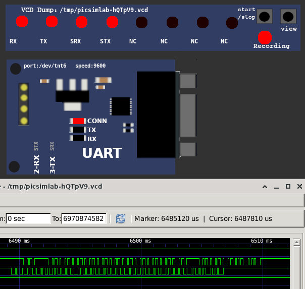</a></td>
<td width="20%" align=left ><a href="pzw/board_Arduino_Uno/atmega328p/softserial.pzw" target="_blank" >Download (pzw)</a>
</td></tr></table>
<hr><table style="width:100%" border="0" bgcolor='#efefef'>
<tr><td colspan=2 width="100%"><a name="board_Arduino_Uno_atmega328p_srtank_test"></a><small>[<a href='#board_Arduino_Uno_atmega328p'>atmega328p</a>/srtank_test]</small>  <h1> Serial remote tank simple test </h1>
<pre>
Open the Serial remote tank in tools menu and connect the serial.

To use the serial port, first configure the com0com or tty0tty as 
described in the help and open the serial terminal (cutecom).
</pre>


<a href="https://github.com/lcgamboa/picsimlab_examples/blob/master/docs/board_Arduino_Uno/atmega328p/srtank_test/src/srtank_test.ino" target="_blank">srtank_test.ino</a><br><br></td></tr><tr><td width="80%" align=center><a target="blank_" href="board_Arduino_Uno/atmega328p/srtank_test/srtank_test.png"></a></td>
<td width="20%" align=left ><a href="pzw/board_Arduino_Uno/atmega328p/srtank_test.pzw" target="_blank" >Download (pzw)</a>
</td></tr></table>
<hr><table style="width:100%" border="0" bgcolor='#efefef'>
<tr><td colspan=2 width="100%"><a name="board_Arduino_Uno_atmega328p_stepper_onerevolution"></a><small>[<a href='#board_Arduino_Uno_atmega328p'>atmega328p</a>/stepper_onerevolution]</small>  <h1>  Stepper Motor Control - one revolution</h1>
<pre>
 This program drives a unipolar or bipolar stepper motor.
 The motor is attached to digital pins 8 - 11 of the Arduino.

 The motor should revolve one revolution in one direction, then
 one revolution in the other direction.


 Created 11 Mar. 2007
 Modified 30 Nov. 2009
 by Tom Igoe
</pre>


<a href="https://github.com/lcgamboa/picsimlab_examples/blob/master/docs/board_Arduino_Uno/atmega328p/stepper_onerevolution/src/stepper_oneRevolution.ino" target="_blank">stepper_oneRevolution.ino</a><br><br></td></tr><tr><td width="80%" align=center><a target="blank_" href="board_Arduino_Uno/atmega328p/stepper_onerevolution/stepper_onerevolution.png"></a></td>
<td width="20%" align=left ><a href="pzw/board_Arduino_Uno/atmega328p/stepper_onerevolution.pzw" target="_blank" >Download (pzw)</a>
<br><br><a href="../js/picsimlab.html?../picsimlab_examples/pzw/board_Arduino_Uno/atmega328p/stepper_onerevolution.pzw" target="_blank" >View Online</a><br><br>
</td></tr></table>
<hr><table style="width:100%" border="0" bgcolor='#efefef'>
<tr><td colspan=2 width="100%"><a name="board_Arduino_Uno_atmega328p_tictactoe"></a><small>[<a href='#board_Arduino_Uno_atmega328p'>atmega328p</a>/tictactoe]</small>  <h1>  Arduino Touch Tic-Tac-Toe Game </h1>
<pre>
   //////////////////////////////////////////////
  //     2.8" TOUCH SCREEN TIC TAC TOE        //
 //                                          //
//           http://www.educ8s.tv           //
/////////////////////////////////////////////
</pre>
<br>
<br>
<a href="https://create.arduino.cc/projecthub/nickthegreek82/arduino-touch-tic-tac-toe-game-792816" target="_blank">Arduino Touch Tic-Tac-Toe Game project</a><br><br></td></tr><tr><td width="80%" align=center><a target="blank_" href="board_Arduino_Uno/atmega328p/tictactoe/tictactoe.png">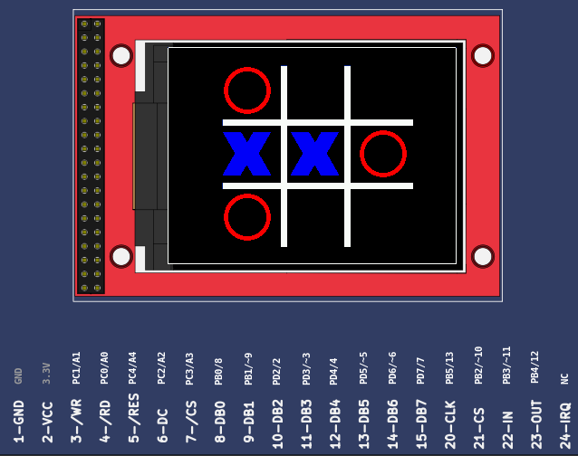</a></td>
<td width="20%" align=left ><a href="pzw/board_Arduino_Uno/atmega328p/tictactoe.pzw" target="_blank" >Download (pzw)</a>
<br><br><a href="../js/picsimlab.html?../picsimlab_examples/pzw/board_Arduino_Uno/atmega328p/tictactoe.pzw" target="_blank" >View Online</a><br><br>
</td></tr></table>
<hr><table style="width:100%" border="0" bgcolor='#efefef'>
<tr><td colspan=2 width="100%"><a name="board_Arduino_Uno_atmega328p_udpntpclient"></a><small>[<a href='#board_Arduino_Uno_atmega328p'>atmega328p</a>/udpntpclient]</small>  <h1> library Ethernet example: UdpNtpClient  </h1>
<pre>
 Udp NTP Client
 Get the time from a Network Time Protocol (NTP) time server
 Demonstrates use of UDP sendPacket and ReceivePacket
 For more on NTP time servers and the messages needed to communicate with them,
 see http://en.wikipedia.org/wiki/Network_Time_Protocol
 created 4 Sep 2010
 by Michael Margolis
 modified 9 Apr 2012
 by Tom Igoe
 modified 02 Sept 2015
 by Arturo Guadalupi
 This code is in the public domain.
</pre>


<a href="https://github.com/arduino-libraries/Ethernet/blob/master/examples/UdpNtpClient/UdpNtpClient.ino" target="_blank">UdpNtpClient.ino</a><br><br></td></tr><tr><td width="80%" align=center><a target="blank_" href="board_Arduino_Uno/atmega328p/udpntpclient/udpntpclient.png"></a></td>
<td width="20%" align=left ><a href="pzw/board_Arduino_Uno/atmega328p/udpntpclient.pzw" target="_blank" >Download (pzw)</a>
</td></tr></table>
<hr><table style="width:100%" border="0" bgcolor='#efefef'>
<tr><td colspan=2 width="100%"><a name="board_Arduino_Uno_atmega328p_ultrasonic"></a><small>[<a href='#board_Arduino_Uno_atmega328p'>atmega328p</a>/ultrasonic]</small>  <h1>Ultrasonic range finder</h1>


<a href="https://how2electronics.com/arduino-ultrasonic-range-finder-hc-sr04-oled-display/" target="_blank">https://how2electronics.com/arduino-ultrasonic-range-finder-hc-sr04-oled-display/</a>

<br>
<br>
<a href="https://github.com/lcgamboa/picsimlab_examples/blob/master/docs/board_Arduino_Uno/atmega328p/ultrasonic/src/ultrasonic.ino" target="_blank">ultrasonic.ino</a><br><br></td></tr><tr><td width="80%" align=center><a target="blank_" href="board_Arduino_Uno/atmega328p/ultrasonic/ultrasonic.png"></a></td>
<td width="20%" align=left ><a href="pzw/board_Arduino_Uno/atmega328p/ultrasonic.pzw" target="_blank" >Download (pzw)</a>
</td></tr></table>
<hr><table style="width:100%" border="0" bgcolor='#efefef'>
<tr><td colspan=2 width="100%"><a name="board_Arduino_Uno_atmega328p_URTouch_ButtonTest"></a><small>[<a href='#board_Arduino_Uno_atmega328p'>atmega328p</a>/URTouch_ButtonTest]</small>  <h1> URTouch Library - ButtonTest</h1>
<pre>
// URTouch_ButtonTest 
// Copyright (C)2015 Rinky-Dink Electronics, Henning Karlsen. All right reserved
// web: http://www.RinkyDinkElectronics.com/
//
// This program is a quick demo of how create and use buttons.
//
// This program requires the UTFT library.
//
// It is assumed that the display module is connected to an
// appropriate shield or that you know how to change the pin 
// numbers in the setup.
//
</pre>
<br>
<br>
<a href="http://www.rinkydinkelectronics.com/library.php?id=92" target="_blank">Library: URTouch</a><br><br></td></tr><tr><td width="80%" align=center><a target="blank_" href="board_Arduino_Uno/atmega328p/URTouch_ButtonTest/URTouch_ButtonTest.png"></a></td>
<td width="20%" align=left ><a href="pzw/board_Arduino_Uno/atmega328p/URTouch_ButtonTest.pzw" target="_blank" >Download (pzw)</a>
<br><br><a href="../js/picsimlab.html?../picsimlab_examples/pzw/board_Arduino_Uno/atmega328p/URTouch_ButtonTest.pzw" target="_blank" >View Online</a><br><br>
</td></tr></table>
<hr><table style="width:100%" border="0" bgcolor='#efefef'>
<tr><td colspan=2 width="100%"><a name="board_Arduino_Uno_atmega328p_URTouch_QuickPaint"></a><small>[<a href='#board_Arduino_Uno_atmega328p'>atmega328p</a>/URTouch_QuickPaint]</small>  <h1> URTouch Library - QuickPaint</h1>
<pre>
// URTouch_QuickPaint 
// Copyright (C)2015 Rinky-Dink Electronics, Henning Karlsen. All right reserved
// web: http://www.RinkyDinkElectronics.com/
//
// This program is a quick demo of how to use the library.
//
// This program requires the UTFT library and a display
// module with at least 320x240 pixels resolution.
//
// It is assumed that the display module is connected to an
// appropriate shield or that you know how to change the pin 
// numbers in the setup.
//
</pre>
<br>
<br>
<a href="http://www.rinkydinkelectronics.com/library.php?id=92" target="_blank">Library: URTouch</a><br><br></td></tr><tr><td width="80%" align=center><a target="blank_" href="board_Arduino_Uno/atmega328p/URTouch_QuickPaint/URTouch_QuickPaint.png">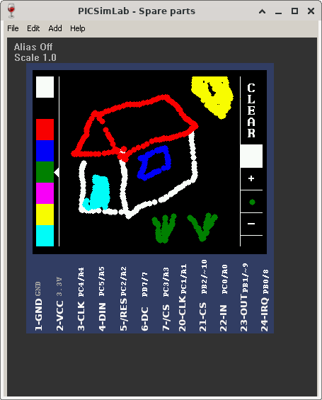</a></td>
<td width="20%" align=left ><a href="pzw/board_Arduino_Uno/atmega328p/URTouch_QuickPaint.pzw" target="_blank" >Download (pzw)</a>
<br><br><a href="../js/picsimlab.html?../picsimlab_examples/pzw/board_Arduino_Uno/atmega328p/URTouch_QuickPaint.pzw" target="_blank" >View Online</a><br><br>
</td></tr></table>
<hr><table style="width:100%" border="0" bgcolor='#efefef'>
<tr><td colspan=2 width="100%"><a name="board_Arduino_Uno_atmega328p_webclientrepeating"></a><small>[<a href='#board_Arduino_Uno_atmega328p'>atmega328p</a>/webclientrepeating]</small>  <h1> library Ethernet example: WebClientRepeating  </h1>
<pre>
  Repeating Web client
 This sketch connects to a a web server and makes a request
 using a Wiznet Ethernet shield. You can use the Arduino Ethernet shield, or
 the Adafruit Ethernet shield, either one will work, as long as it's got
 a Wiznet Ethernet module on board.
 This example uses DNS, by assigning the Ethernet client with a MAC address,
 IP address, and DNS address.
 Circuit:
 * Ethernet shield attached to pins 10, 11, 12, 13
 created 19 Apr 2012
 by Tom Igoe
 modified 21 Jan 2014
 by Federico Vanzati
 http://www.arduino.cc/en/Tutorial/WebClientRepeating
 This code is in the public domain.
</pre>


<a href="https://github.com/arduino-libraries/Ethernet/blob/master/examples/WebClientRepeating/WebClientRepeating.ino" target="_blank">WebClientRepeating.ino</a><br><br></td></tr><tr><td width="80%" align=center><a target="blank_" href="board_Arduino_Uno/atmega328p/webclientrepeating/webclientrepeating.png">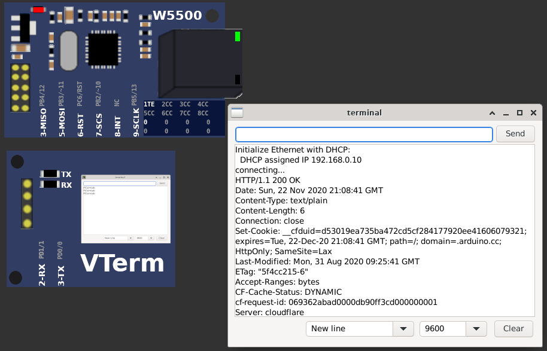</a></td>
<td width="20%" align=left ><a href="pzw/board_Arduino_Uno/atmega328p/webclientrepeating.pzw" target="_blank" >Download (pzw)</a>
</td></tr></table>
<hr><table style="width:100%" border="0" bgcolor='#efefef'>
<tr><td colspan=2 width="100%"><a name="board_Arduino_Uno_atmega328p_webserver"></a><small>[<a href='#board_Arduino_Uno_atmega328p'>atmega328p</a>/webserver]</small>  <h1> library Ethernet example: WebServer </h1>
<pre>
  Web Server
 A simple web server that shows the value of the analog input pins.
 using an Arduino Wiznet Ethernet shield.
 Circuit:
 * Ethernet shield attached to pins 10, 11, 12, 13
 * Analog inputs attached to pins A0 through A5 (optional)
 created 18 Dec 2009
 by David A. Mellis
 modified 9 Apr 2012
 by Tom Igoe
 modified 02 Sept 2015
 by Arturo Guadalupi
</pre>
<br>
<br>Open a browser on address <a href="http://127.0.0.1:2080" target="_blank" >http://127.0.0.1:2080</a> 
<br>
<a href="https://github.com/arduino-libraries/Ethernet/blob/master/examples/WebServer/WebServer.ino" target="_blank">WebServer.ino</a><br><br></td></tr><tr><td width="80%" align=center><a target="blank_" href="board_Arduino_Uno/atmega328p/webserver/webserver.png"></a></td>
<td width="20%" align=left ><a href="pzw/board_Arduino_Uno/atmega328p/webserver.pzw" target="_blank" >Download (pzw)</a>
</td></tr></table>
<hr><table style="width:100%" border="0" bgcolor='#efefef'>
<tr><td colspan=2 width="100%"><a name="board_Arduino_Uno_atmega328p_wires"></a><small>[<a href='#board_Arduino_Uno_atmega328p'>atmega328p</a>/wires]</small>  <h1> Jumper Wires example</h1>

This examples show the use of jumper wires to direct connect parts. The microcontroller is not used on example.<br><br></td></tr><tr><td width="80%" align=center><a target="blank_" href="board_Arduino_Uno/atmega328p/wires/wires.png"></a></td>
<td width="20%" align=left ><a href="pzw/board_Arduino_Uno/atmega328p/wires.pzw" target="_blank" >Download (pzw)</a>
<br><br><a href="../js/picsimlab.html?../picsimlab_examples/pzw/board_Arduino_Uno/atmega328p/wires.pzw" target="_blank" >View Online</a><br><br>
</td></tr></table>
</main>
<script src='picsimlab.js' type='text/javascript'></script>
<script data-goatcounter='https://4017.goatcounter.com/count' src='https://gc.zgo.at/count.js'></script>
<div class='footer'>Copyright © 2022 lcgamboa. Built with make4ht.</div></body></html>
